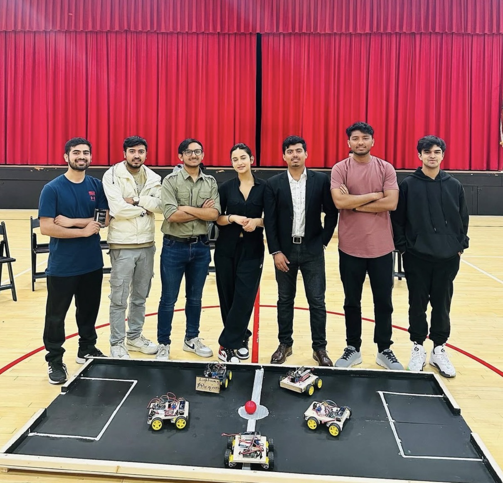
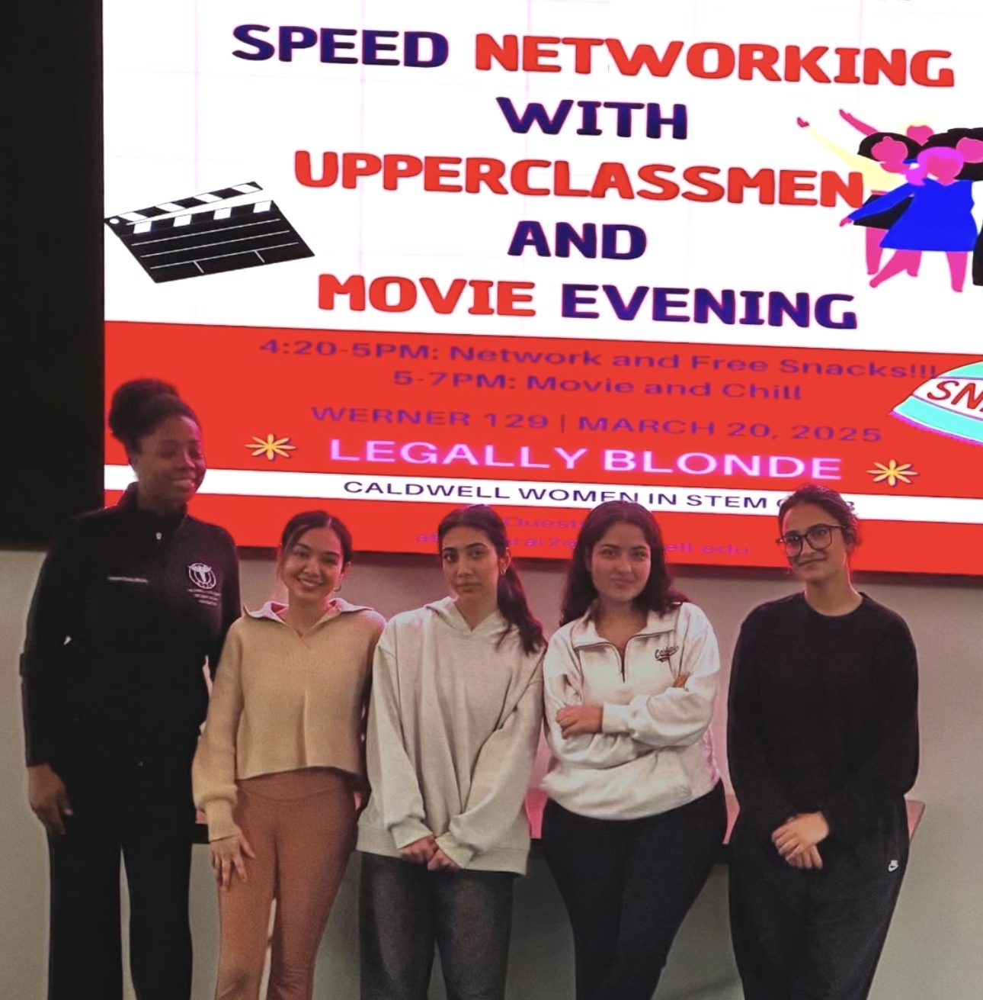
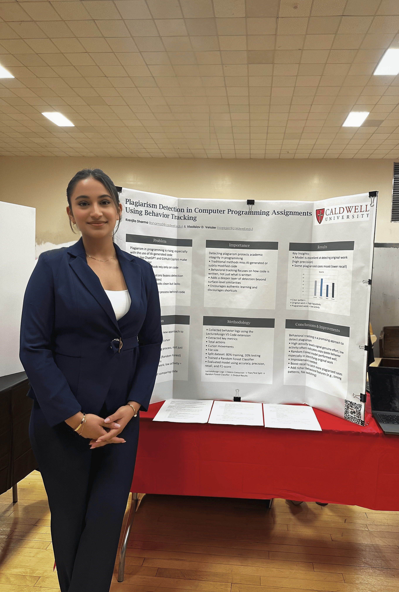

Beyond the dashboard
Life outside
of data.
The resume tells you what I've built. This page tells you who built it.
Who I am
More than
a GPA.
I'm a first-gen student from NJ who decided that CS and Business Analytics wasn't enough — so I added slam poetry, a robotics club, and a Women in STEM board role on top of it.
I write code in the morning and used to write verses at night. I think the best analysts are also great storytellers, and I've been practicing both since I can remember.
I move to music constantly, find beauty in a well-framed photo, and genuinely believe the most interesting people are the ones who refuse to be one thing.
What I do for fun.
No dashboards involved.
Slam Poetry
I used to perform. There's something about finding exactly the right word — same reason I like data, actually. Both are just trying to say something true, precisely.
Dancing
The one thing I do where I'm not thinking about optimization or outcomes. Pure movement. Turns out it's good for you to just exist in your body sometimes.
Photography
Not professionally — just the urge to frame things. Light, moments, people mid-laugh. It's the same eye I use for design work, but with less Figma involved.
Music, always
24/7, no exceptions. The playlist changes depending on whether I'm debugging, presenting, or avoiding both. There is always a song playing somewhere nearby.
Leadership.
On campus.

Secretary
Caldwell Robotics Club
Jan 2025 – Present
Coordinating meetings, managing records, and keeping 20+ members aligned — which is harder than it sounds when everyone has a different idea of what the robot should do.

Media Manager
Women in STEM
Sep 2024 – Present
Running content strategy for a club that reaches 500+ students. Grew event attendance by 40% through analytics-informed content — yes, I use data to promote a club that celebrates data. The irony is not lost on me.
Member
Google Developer Group
Dec 2024 – Present
Facilitating biweekly workshops on HTML, CSS, and Java for fellow students. Building technical community one semicolon at a time.

CCSCNE 2025
Published.
Presented.
Proud of it.
That's my plagiarism detection research on the board behind me. Presented at the Consortium for Computing Sciences in Colleges, Northeast — the only junior in the room who built the system she was presenting.
Read the research →